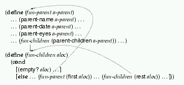

|
In the preceding section, we developed data representations of family trees, Web pages, and Scheme expressions. Developing functions for these data definitions was based on one and the same design recipe. If we wish to develop more realistic representations of Web pages or Scheme expressions, or if we wish to study descendant family trees rather than ancestor trees, we must learn to describe classes of data that are interrelated. That is, we must formulate several data definitions at once where the data definitions not only refer to themselves, but also refer to other data definitions.
When we build a family tree retroactively, we often start from the child's perspective and proceed from there to parents, grandparents, etc. As we construct the tree, we write down who is whose child rather than who is whose parents. We build a descendant family tree.
Drawing a descendant tree proceeds just like drawing an ancestor tree, except that all arrows are reversed. Figure 40 represents the same family as that of figure 35, but drawn from the descendant perspective.
|
Representing these new kinds of family trees and their nodes in a computer requires a different class of data than do the ancestor family trees. This time a node must include information about the children instead of the two parents. Here is a structure definition:
(define-struct parent (children name date eyes))
The last three fields in a parent structure contain the same basic
information as a corresponding child structure, but the contents of the
first one poses an interesting question. Since a parent may have an
arbitrary number of children, the children field must contain an
undetermined number of nodes, each of which represents one child.
The natural choice is to insist that the children field always
stands for a list of parent structures. The list represents the
children; if a person doesn't have children, the list is empty.
This decision suggests the following data definition:
Unfortunately, this data definition violates our criteria concerning definitions. In particular, it mentions the name of a collection that is not yet defined: list of children.A parent is a structure:where
(make-parent loc n d e)locis a list of children,nandeare symbols, anddis a number.
Since it is impossible to define the class of parents without knowing what a list of children is, let's start from the latter:
This second definition looks standard, but it suffers from the same problem as the one forA list of children is either
emptyor
(cons p loc)wherepis a parent andlocis a list of children.
parents. The unknown class it refers to is that of
the class of parents, which cannot be defined without a definition for the
list of children, and so on. The conclusion is that the two data definitions refer to each other and are only meaningful if introduced together:
(make-parent loc n d e) loc is a list of children, n and e are symbols, and d is a number.
A list-of-children is either
empty or
(cons p loc) where p is a parent and loc is a list of children.
When two (or more) data definitions refer to each other, they are said to be MUTUALLY RECURSIVE or MUTUALLY REFERENTIAL.
Now we can translate the family tree of figure 40 into our
Scheme data language. Before we can create a parent structure, of
course, we must first define all of the nodes that represent children. And,
just as in section 14.1, the best way to do this is
to name a parent structure before we reuse it in a list of
children. Here is an example:
(define Gustav (make-parent empty 'Gustav 1988 'brown)) (make-parent (list Gustav) 'Fred 1950 'yellow)
To create a parent structure for Fred, we first define one for
Gustav so that we can form (list Gustav), the list of children for
Fred.
Figure 41 contains the complete Scheme representation for our descendant tree. To avoid repetitions, it also includes definitions for lists of children. Compare the definitions with figure 36 (see page 19), which represents the same family as an ancestor tree.
Let us now study the development of blue-eyed-descendant?, the
natural companion of blue-eyed-ancestor?. It consumes a
parent structure and determines whether it or any of its
descendants has blue eyes:
;;blue-eyed-descendant? : parent -> boolean;; to determine whethera-parentor any of its descendants (children, ;; grandchildren, and so on) have'bluein theeyesfield (define (blue-eyed-descendant? a-parent) ...)
Here are three simple examples, formulated as tests:
(boolean=? (blue-eyed-descendant? Gustav) false) (boolean=? (blue-eyed-descendant? Eva) true) (boolean=? (blue-eyed-descendant? Bettina) true)
A glance at figure 40 explains the answers in each case.
According to our rules, the template for blue-eyed-descendant? is
simple. Since its input is a plain class of structures, the template
contains nothing but selector expressions for the fields in the structure:
(define (blue-eyed-descendant? a-parent) ... (parent-children a-parent) ... ... (parent-name a-parent) ... ... (parent-date a-parent) ... ... (parent-eyes a-parent) ... )
The structure definition for parent specifies four fields so there
are four expressions.
The expressions in the template remind us that the eye color of the parent
is available and can be checked. Hence we add a cond-expression
that compares (parent-eyes a-parent) to 'blue:
(define (blue-eyed-descendant? a-parent) (cond [(symbol=? (parent-eyes a-parent) 'blue) true] [else ... (parent-children a-parent) ... ... (parent-name a-parent) ... ... (parent-date a-parent) ...]))
The answer is true if the condition holds. The else clause
contains the remaining expressions. The name and date
field have nothing to do with the eye color of a person, so we can ignore
them. This leaves us with
(parent-children a-parent)
an expression that extracts the list of children from the parent
structure.
If the eye color of some parent structure is not 'blue,
we must clearly search the list of children for a blue-eyed descendant.
Following our guidelines for complex functions, we add the function to our
wish list and continue from there. The function that we want to put on a
wish list consumes a list of children and checks whether any of these or
their grandchildren has blue eyes. Here are the contract, header, and
purpose statement:
;;blue-eyed-children? : list-of-children -> boolean;; to determine whether any of the structures onalocis blue-eyed ;; or has any blue-eyed descendant (define (blue-eyed-children? aloc) ...)
Using blue-eyed-children? we can complete the definition of
blue-eyed-descendant?:
(define (blue-eyed-descendant? a-parent) (cond [(symbol=? (parent-eyes a-parent) 'blue) true] [else (blue-eyed-children? (parent-children a-parent))]))
That is, if a-parent doesn't have blue eyes, we just look through
the list of its children.
Before we can test blue-eyed-descendant?, we must define the
function on our wish list. To make up examples and tests for
blue-eyed-children?, we use the list-of-children definitions in
figure 41:
(not (blue-eyed-children? (list Gustav)))
(blue-eyed-children? (list Adam Dave Eva))
Gustav doesn't have blue eyes and doesn't have any recorded descendants.
Hence, blue-eyed-children? produces false for (list
Gustav). In contrast, Eva has blue eyes, and therefore
blue-eyed-children? produces true for the second list of
children.
Since the input for blue-eyed-children? is a list, the template is
the standard pattern:
(define (blue-eyed-children? aloc) (cond [(empty? aloc) ...] [else ... (first aloc) ... ... (blue-eyed-children? (rest aloc)) ...]))
Next we consider the two cases. If blue-eyed-children?'s input is
empty, the answer is false. Otherwise we have two
expressions:
(first aloc), which extracts the first item, a
parent structure, from the list; and
(blue-eyed-children? (rest aloc)), which determines whether
any of the structures on aloc is blue-eyed or has any blue-eyed
descendant.
Fortunately we already have a function that determines whether a
parent structure or any of its descendants has blue eyes:
blue-eyed-descendant?. This suggests that we check whether
(blue-eyed-descendant? (first aloc))
holds and, if so, blue-eyed-children? can produce true. If
not, the second expression determines whether we have more luck with the
rest of the list.
Figure 42 contains the complete definitions for both
functions: blue-eyed-descendant? and blue-eyed-children?.
Unlike any other group of functions, these two functions refer to each
other. They are MUTUALLY RECURSIVE.
Not surprisingly, the mutual references in the definitions match the mutual
references in data definitions. The figure also contains a pair of
alternative definitions that use or instead of nested
cond-expressions.
|
Exercise 15.1.1.
Evaluate (blue-eyed-descendant? Eva) by hand. Then evaluate
(blue-eyed-descendant? Bettina).  Solution
Solution
Exercise 15.1.2.
Develop the function how-far-removed. It determines how far a
blue-eyed descendant, if one exists, is removed from the given parent. If
the given parent has blue eyes, the distance is 0; if
eyes is not blue but at least one its children's eyes are,
the distance is 1; and so on. If no descendant of the given
parent has blue eyes, the function returns false when it is
applied to the corresponding family tree.  Solution
Solution
Exercise 15.1.3.
Develop the function count-descendants, which consumes a parent
and produces the number of descendants, including the parent.
Develop the function count-proper-descendants, which consumes a
parent and produces the number of proper descendants, that is, all nodes in
the family tree, not counting the parent.  Solution
Solution
Exercise 15.1.4.
Develop the function eye-colors, which consumes a parent and
produces a list of all eye colors in the tree. An eye color may occur more
than once in the list.
Hint: Use the Scheme operation append, which consumes two lists
and produces the concatenation of the two lists.  Solution
Solution
The recipe for designing functions on mutually referential data definitions generalizes that for self-referential data. Indeed, it offers only two pieces of additional advice. First, we must create several templates simultaneously, one for each data definition. Second, we must annotate templates with self-references and CROSS-REFERENCES, that is, references among different templates. Here is a more detailed explanation of the differences:
In the above example, we needed two interrelated definitions:
|
|
|
|
The first one concerns parents and another one for list of children. The
first (unconditionally) defines a parent in terms of symbols, numbers, and
a list of children, that is, it contains a cross-reference to the second
definition. This second definition is a conditional definition. Its first
clause is simple; its second clause references both the definition for
parents and list-of-children.
Here are the templates for our running example:

The fun-parent template is unconditional because the data
definition for parents does not contain any clauses. It contains
a cross-reference to the second template: to process the
children field of a parent structure. By the same rules,
fun-children is conditional. The second cond-clause
contains one self-reference, for the rest of the list, and one
cross-reference for the first item of the list, which is a
parent structure.
A comparison of the data definitions and the templates shows how analogous the two are. To emphasize the similarity in self-references and cross-references, the data definitions and templates have been annotated with arrows. It is easy to see how corresponding arrows have the same origin and destination in the two pictures.
cond-clause that does not contain
self-references to the template and cross-references to other templates.
The results are typically easy to formulate for such templates or
cond-clauses.The rest of this step proceeds as before. When we deal with other clauses or functions, we remind ourselves what each expression in the template computes, assuming that all functions already work as specified in the contracts. Then we decide how to combine these pieces of data into a final answer. As we do that, we must not forget the guidelines concerning the composition of complex functions (sections 7.3 and 12).
Figure 43 summarizes the extended design recipe.
|
With mutually referential data definitions we can represent Web pages in a more accurate manner than in section 14.3. Here is the basic structure definition:
(define-struct wp (header body))
The two fields contain the two essential pieces of data in a Web page: a
header and a body. The data definition specifies that a
body is a list of words and Web pages:
A Web-page (short: WP) is a structure:
(make-wp h p) h is a symbol and p is a (Web) document.
A (Web) document is either
empty,
(cons s p)
where s is a symbol and p is a document, or
(cons w p)
where w is a Web page and p is a document.
Exercise 15.3.1.
Develop the function size, which consumes a Web page and produces
the number of symbols (words) it contains.  Solution
Solution
Develop the function wp-to-file. The function consumes a Web page
and produces a list of symbols. The list contains all the words in a body
and all the headers of embedded Web pages. The bodies of immediately
embedded Web pages are ignored.  Solution
Solution
Exercise 15.3.3.
Develop the function occurs. It consumes a symbol and a Web page
and determines whether the former occurs anywhere in the latter, including
the embedded Web pages.  Solution
Solution
Exercise 15.3.4.
Develop the program find. The function consumes a Web page and a
symbol. It produces false, if the symbol does not occur in the body
of the page or its embedded Web pages. If the symbol occurs at least once,
it produces a list of the headers that are encountered on the way to the
symbol.
Hint: Define an auxiliary like find that produces only
true when a Web page contains the desired word. Use it to define
find. Alternatively, use boolean? to determine whether a
natural recursion of find produced a list or a boolean. Then
compute the result again. We will discuss this second technique, called
backtracking, in the intermezzo at the end of this
part.  Solution
Solution
![[curriculum2-Z-G-3.gif]](curriculum2-Z-G-3.gif)
![[curriculum-Z-G-D-4.gif]](curriculum-Z-G-D-4.gif) at least one definition or one alternative in a definition
must refer to basic data
at least one definition or one alternative in a definition
must refer to basic data